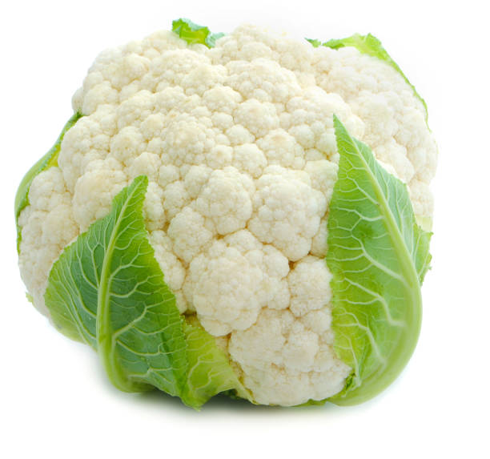
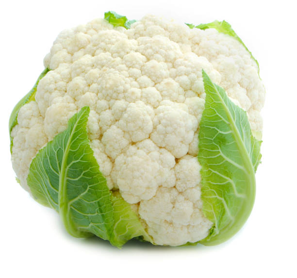

From our website we are going to make or bring different kind of vegetables in one place.
Make sure the user to share their knowekdge to other and know about different vegetables.
These websit gives ultimate solution for all of them that is we are making where each and every one check and see the website.
These website need username and password.so the visitors of our website can safely access through and also able to get all kind of vegetables.
Online veggi-e-mart is a web based project,it will be able to present viewer all related informatio about all vegetables.
At the same time allows management task to be done on the system.
The system will not provide only marketing but also as a good management tools
Our goal is to reach you the 100% pure and freash vegetables to visits of our website.
The most important goal of our project is to save the time of visitors and human effects as well as provide.
 

After refer our website people share there throught or feedbacks and they are happy with our website. We guarantee on time delivery, and the best quality!